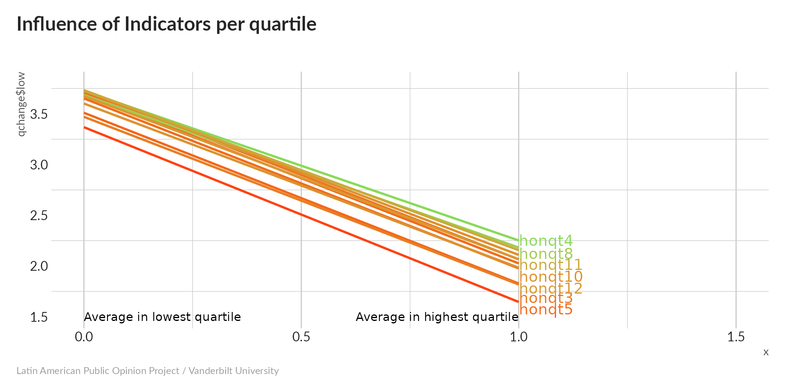
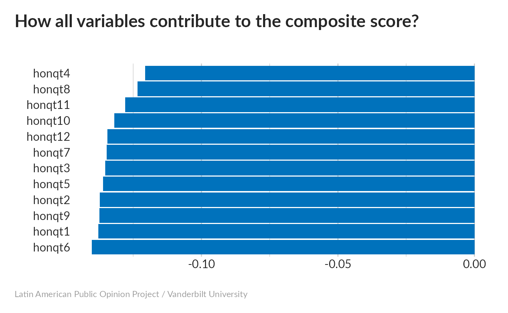
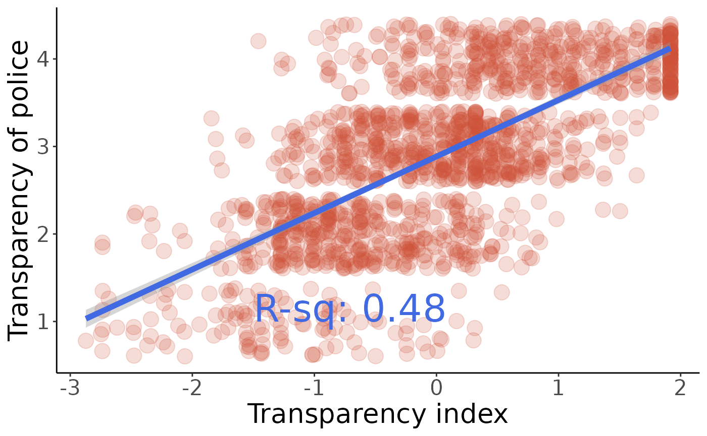

Introduction
An initial step in the analysis consist in the creation a series of indices to better understand different group of variables together.
Those indices can be built with principal component analysis and require the imputation of missing values.
We’ll load all three 2014 datasets and construct a data frame containing the columns we want.
Authoritarianism index
This index will measure the a respondent’s inclination toward authoritarian political attitudes. The following variables were measured in all three countries and correlate strongly with each other:
-
dem2: Support for democracy or dictatorship (1=either is OK, 2=democracy, 3=dictatorship) -
dem11: Support for mano dura policies (1=iron fist, 2=broad participation) -
jc10: Coup is justified when crime is high (1=yes, 2=no) -
jc13: Coup is justified when corruption is high (1=yes, 2=no) -
jc15a: President justified in governing without legislature during crisis (1=yes, 2=no)
Principal Componnent Analysis without imputation

#> Importance of components:
#> PC1 PC2 PC3 PC4 PC5
#> Standard deviation 0.7370 0.6143 0.4676 0.31602 0.29372
#> Proportion of Variance 0.4098 0.2848 0.1650 0.07536 0.06509
#> Cumulative Proportion 0.4098 0.6946 0.8596 0.93491 1.0000041% of variance is concentrated in the first component.
Missing values imputation

Most variables had fairly similar numbers of missing values; people were least willing to talk about expanded presidential powers (jc15a) and most willing to talk about mano dura policies (dem11).
What does PCA look like for one of the five imputed datasets?
#> Importance of components:
#> PC1 PC2 PC3 PC4 PC5
#> Standard deviation 0.7449 0.6148 0.4708 0.33637 0.29880
#> Proportion of Variance 0.4089 0.2786 0.1633 0.08338 0.06579
#> Cumulative Proportion 0.4089 0.6875 0.8508 0.93421 1.00000PCA results look very similar to what we saw without imputation, which is good.
Scatterplot matrix
The distribution of PC1 seems to fall into three bands, suggesting that the index is dominated by one variable that takes on three values.
All of our imputations are really well-correlated, and the lowest-valued band is the most heavily-populated one.

Influence of indicator
Compared to the lowest quantile, the highest quantile of our proposed index has much higher values for dem2 and decreasing values for everything else. Lower values for dem2 indicate a preference for democracy, while higher values of the binary variables indicate less-authoritarian attitudes. The scale is therefore in pointing in the right direction.
dem2 is the only variable that takes on three values; its strong slope in this plot suggests that it is the dominant factor in our index.
While all five variables have an impact on the composite index, dem2 has by far the strongest influence.
We can be more rigorous about this by calculating p-values. We’ll have to do this differently for dem2 (which takes on three values) than for the ones that only take on two. All are significantly-correlated (especially dem2).
#> var est
#> 1 dem2_lo 2.2059117
#> 2 dem2_hi 2.5747007
#> 3 dem11 -0.5828680
#> 4 jc13 -0.6417458
#> 5 jc10 -0.6588937
#> 6 jc15a -0.4777995
#> pval
#> 1 0.000000000000000000000000000000000000000000000000000000000000000000000000000000000000000000000000000000
#> 2 0.000000000000000000000000000000000000000000000000000000000000000000000000000000000000000000000000000000
#> 3 0.000000000000000000000000000000000000000000000000000000000000000000000000000218443716780844788135466113
#> 4 0.000000000000000000000000000000000000000000000000000000000000000000000000000000000000000000000001037536
#> 5 0.000000000000000000000000000000000000000000000000000000000000000000000000000000000000000640517417345911
#> 6 0.000000000000000000063766179717723493617151831591256120568691678481418669407684851613282717153197154403Sympathy with government critics index
This index measures a respondent’s level of sympathy with government critics (aka a measure of political tolerance). It includes the following variables:
-
d1: Approval of government critics’ right to vote (1=low, 10=high) -
d2: Approval of government critics’ right to hold peaceful demonstrations -
d3: Approval of government critics’ right to run for office -
d4: Approval of government critics’ right to make speeches -
e5: Approval of participation in legal demonstrations (1=disapprove, 10=approve) -
e15: Approval of blocking roads during protest (1=approve, 10=disapprove) -
e3: Approval of groups attempting to overthrow government (1=disapprove, 10=approve) -
e16: Approval of vigilante justice (1=disapprove, 10=approve)
Principal Componnent Analysis without imputation

#> Importance of components:
#> PC1 PC2 PC3 PC4 PC5 PC6 PC7
#> Standard deviation 4.9201 3.2383 2.8796 2.5338 2.18764 2.08894 1.7304
#> Proportion of Variance 0.3792 0.1643 0.1299 0.1006 0.07496 0.06835 0.0469
#> Cumulative Proportion 0.3792 0.5434 0.6733 0.7739 0.84882 0.91716 0.9641
#> PC8
#> Standard deviation 1.51473
#> Proportion of Variance 0.03594
#> Cumulative Proportion 1.0000038% of variance is in the first principal component – pretty typical for our composite indices.
Missing values imputation

None of these involved a lot of imputation; in general the questions about the political rights of government critics (d1,d2,d3,d4) needed more imputation than the questions about the appropriateness of protests or anti-government activity.
Look at PCA for one of our imputed datasets:

#> Importance of components:
#> PC1 PC2 PC3 PC4 PC5 PC6 PC7
#> Standard deviation 4.9062 3.2494 2.9037 2.5452 2.19729 2.08742 1.73991
#> Proportion of Variance 0.3754 0.1647 0.1315 0.1010 0.07531 0.06796 0.04722
#> Cumulative Proportion 0.3754 0.5401 0.6716 0.7727 0.84798 0.91594 0.96316
#> PC8
#> Standard deviation 1.53681
#> Proportion of Variance 0.03684
#> Cumulative Proportion 1.00000PCA results look very similar to what we saw without imputation, which is good.

Scatterplot matrix
This scatterplot shows a very continuous distribution along PC1; a good sign that a single variable doesn’t really dominate this index. It helps that each variable can take a large number of values, meaning that a large number of combinations are possible (and present).

All of our imputations are really well-correlated, and the distributions of PC1 look well-behaved.
Influence of indicator
All variables increase with PC1 – high values indicate greater approval of dissident rights, so our index is pointing in the right direction. The steepest slope (i.e. the largest difference between the lowest and highest quartiles) belongs to d2 (approval of critics’ right to hold peaceful demonstrations), while e3 (approval of groups trying to overthrow the government) has the shallowest slope. Even the most tolerant people don’t have much patience with revolutionaries.
Let’s normalize and average PC1:
Now, let’s see how each variable contributes to the composite score:

This is roughly what we’d expect – all variables have an influence, with d2 the strongest and e3 the weakest.
We can be more rigorous about this by calculating p-values. As all variables are measured on a 1-10 scale, we can do this using linear regression.
#> d1
#> 0.00000000000000000000000000000000000000000000000000000000000000000000000000000000000000000000000000000000000000000000000000000000000000000000000000000000000000000000000000000000000000000000000000000000000000000000000000000000000000000000000000000000000000000000000000000000000
#> d2
#> 0.00000000000000000000000000000000000000000000000000000000000000000000000000000000000000000000000000000000000000000000000000000000000000000000000000000000000000000000000000000000000000000000000000000000000000000000000000000000000000000000000000000000000000000000000000000000000
#> d3
#> 0.00000000000000000000000000000000000000000000000000000000000000000000000000000000000000000000000000000000000000000000000000000000000000000000000000000000000000000000000000000000000000000000000000000000000000000000000000000000000000000000000000000000000000000000000000000000000
#> d4
#> 0.00000000000000000000000000000000000000000000000000000000000000000000000000000000000000000000000000000000000000000000000000000000000000000000000000000000000000000000000000000000000000000000000000000000000000000000000000000000000000000000000000000000000000000000000000000000000
#> e3
#> 0.00000000000000000000000000000000000000000000000000000000000000000000000000000000000000000000000000000000000000000000016878440424049935882233743072009933514653264061335978709517595497528072077559126469491451550386208979120135523002169167973890590945404622414744745814750839013
#> e5
#> 0.00000000000000000000000000000000000000000000000000000000000000000000000000000000000000000000000000000000000000000000000000000000000000000000000000000000000000000000000000000000000000000000000000000000000000000000000000000000000000000000000000000000000000000000000000000000000
#> e15
#> 0.00000000000000000000000000000000000000000000000000000000000000000000000000000000000000000000000000000000000000000000000000000000000000000000000000000000000000000000000000000000000000000000000000000000000000000000000000000000000000000000000000000000000000000000000000009904944
#> e16
#> 0.00000000000000000000000000000000000000000000000000000000000000000000000000000000000000000000000000000000000000000000000000000000000000000000000000000000000000000000000000000000000000000000000000000006854929569798420820098131722708074422265878388045549669484924449047610811667All are extremely significant.
We’ll visualize e16 (approval of vigilante justice); modify the code below if you want to look at the others:
#>
#> Call:
#> lm(formula = q ~ w, data = e16)
#>
#> Residuals:
#> Min 1Q Median 3Q Max
#> -6.9236 -2.2223 -0.5727 1.9711 7.6303
#>
#> Coefficients:
#> Estimate Std. Error t value Pr(>|t|)
#> (Intercept) 4.25652 0.04488 94.84 <0.0000000000000002 ***
#> w -1.42390 0.04486 -31.74 <0.0000000000000002 ***
#> ---
#> Signif. codes: 0 '***' 0.001 '**' 0.01 '*' 0.05 '.' 0.1 ' ' 1
#>
#> Residual standard error: 3.027 on 4547 degrees of freedom
#> Multiple R-squared: 0.1814, Adjusted R-squared: 0.1812
#> F-statistic: 1007 on 1 and 4547 DF, p-value: < 0.00000000000000022
The correlation is far from perfect, but people with a high value of our index are significantly more likely to appove of vigilante justice. It’s interesting that e16 seems fairly polarized, with a lot of people answering either 1 or 10.
Finally, check these values against the comments in make_indices.R to be sure we’re calculating the same index:
#> 0% 25% 50% 75% 100%
#> -3.15954077 -0.59009990 0.08632916 0.67942619 1.85647019Community Activity index
-
cp5: Tried to solve a community problem (1=Once a week, 2=Once or twice a month, 3=Once or twice a year, 4=Never) -
cp7: Attended meetings of Parent Association (1=Once a week, 2=Once or twice a month, 3=Once or twice a year, 4=Never) -
cp8: Attended meetings of Community Improvement Association (1=Once a week, 2=Once or twice a month, 3=Once or twice a year, 4=Never) -
cp13: Attended meetings of a Political Party (1=Once a week, 2=Once or twice a month, 3=Once or twice a year, 4=Never) -
cp20: Attended meetings of Women’s Group (1=Once a week, 2=Once or twice a month, 3=Once or twice a year, 4=Never)
Principal Componnent Analysis without imputation

#> Importance of components:
#> PC1 PC2 PC3 PC4 PC5
#> Standard deviation 1.0948 0.8720 0.7153 0.6014 0.53463
#> Proportion of Variance 0.3844 0.2439 0.1641 0.1160 0.09167
#> Cumulative Proportion 0.3844 0.6282 0.7923 0.9083 1.00000Without any imputation, 38.4% of variance is concentrated on the first principal component.
Missing values imputation

None of the variables stand out as needing too much imputation, with the CLEAR exception of cp20, which was question conditioned on the subject being female.
Presumably, what the imputation is telling us is that the individual in question would go to women’s groups if men were invited.

#> Importance of components:
#> PC1 PC2 PC3 PC4 PC5
#> Standard deviation 1.0868 0.9014 0.7557 0.6379 0.5811
#> Proportion of Variance 0.3569 0.2455 0.1726 0.1230 0.1020
#> Cumulative Proportion 0.3569 0.6024 0.7750 0.8980 1.0000With the imputation, we don’t have much change; 37% of variance is concentrated on the first principal component.

Scatterplot matrix
Variation along PC1 seems to be fairly continuous, indicating that this index isn’t dominated by a single variable.

Our different imputed datasets correlate strongly, and the distribution skews toward low values of PC1.
Influence of indicator

All five variables decrease as the index increases; recall that larger values correspond to less-frequent participation, so our index is pointing in the right direction. Because cp7 (parent’s association attendance) has the steepest slope, we suspect that it will have the strongest influence on the composite index.

All variables influence the index; the weakest influence comes from cp13 (Attended meetings of a political party), apparently because even the most-engaged quartile hardly did this at all.
Since all variables take on multiple values, we will check p-values using linear regression.
#> cp5
#> 0.00000000000000000000000000000000000000000000000000000000000000000000000000000000000000000000000000000000000000000000000000000000000000000000000000000000000000000000000000000000000000000000000000000000000000000000000000000000000000000000000000000000000000000000000000000000000000000000000000000000000000000000002139274
#> cp7
#> 0.00000000000000000000000000000000000000000000000000000000000000000000000000000000000000000000000000000000000000000000000000000000000000000000000000000000000000000000000000000000000000000000000000000000000000000000000000000000000000000000000000000000000000000000000000000000000000000000000000000000000000000000000000000
#> cp8
#> 0.00000000000000000000000000000000000000000000000000000000000000000000000000000000000000000000000000000000000000000000000000000000000000000000000000000000000000000000000000000000000000000000000000000000000000000000000000000000000000000000000000000000000000000000000000000000000000000000000000000000000000000000000000000
#> cp13
#> 0.00000000000000000000000000000000000000000000000000000000000000000000004406094557036108617400427876063435356426486314374326397652666434671288076089563219354342048135341536491005174666225033743029303881749817848823179199489893716115585756661808753201214905459437432000413537025451660156250000000000000000000000000000000
#> cp20
#> 0.00000000000000000000000000000000000000000000000000000000000000000000000000000000000000000002593599060271519687241917925874328854761536311996216218898332232202427621844452857622884849793856214494764767283165826947194176499683165956605670583551236658429999397796143608456250257145853834210050630669615892409224989004473All p-values are highly-significant.
#>
#> Call:
#> lm(formula = q ~ w, data = cp7)
#>
#> Residuals:
#> Min 1Q Median 3Q Max
#> -2.5650 -0.4420 0.1520 0.4152 2.4938
#>
#> Coefficients:
#> Estimate Std. Error t value Pr(>|t|)
#> (Intercept) 3.143233 0.009790 321.08 <0.0000000000000002 ***
#> w -0.727497 0.009795 -74.28 <0.0000000000000002 ***
#> ---
#> Signif. codes: 0 '***' 0.001 '**' 0.01 '*' 0.05 '.' 0.1 ' ' 1
#>
#> Residual standard error: 0.6623 on 4575 degrees of freedom
#> Multiple R-squared: 0.5467, Adjusted R-squared: 0.5466
#> F-statistic: 5517 on 1 and 4575 DF, p-value: < 0.00000000000000022
#>
#> Call:
#> lm(formula = q ~ w, data = cp13)
#>
#> Residuals:
#> Min 1Q Median 3Q Max
#> -2.9911 0.1005 0.1677 0.2889 0.8470
#>
#> Coefficients:
#> Estimate Std. Error t value Pr(>|t|)
#> (Intercept) 3.747729 0.008627 434.42 <0.0000000000000002 ***
#> w -0.156673 0.008636 -18.14 <0.0000000000000002 ***
#> ---
#> Signif. codes: 0 '***' 0.001 '**' 0.01 '*' 0.05 '.' 0.1 ' ' 1
#>
#> Residual standard error: 0.5832 on 4568 degrees of freedom
#> Multiple R-squared: 0.06721, Adjusted R-squared: 0.06701
#> F-statistic: 329.1 on 1 and 4568 DF, p-value: < 0.00000000000000022#>
#> Call:
#> lm(formula = q ~ w, data = cp20)
#>
#> Residuals:
#> Min 1Q Median 3Q Max
#> -2.88843 -0.04741 0.12708 0.30158 1.10872
#>
#> Coefficients:
#> Estimate Std. Error t value Pr(>|t|)
#> (Intercept) 3.76631 0.01282 293.85 <0.0000000000000002 ***
#> w -0.29015 0.01362 -21.31 <0.0000000000000002 ***
#> ---
#> Signif. codes: 0 '***' 0.001 '**' 0.01 '*' 0.05 '.' 0.1 ' ' 1
#>
#> Residual standard error: 0.6215 on 2365 degrees of freedom
#> Multiple R-squared: 0.1611, Adjusted R-squared: 0.1607
#> F-statistic: 454.1 on 1 and 2365 DF, p-value: < 0.00000000000000022
Finally, check these values against the comments in make_indices.R to be sure we’re calculating the same index:
#> 0% 25% 50% 75% 100%
#> -2.4896284 -0.9688246 -0.0326719 0.6397838 4.3126366Fear index
The following variables related to fear and violence :
-
fear10: Has avoided walking through dangerous areas -
vic44: Organized in Neighborhood for Security (0 = no, 1=yes) -
vic1exta: Victim of Crime (Frequency) (999999 if vic1ext=2, otherwise max=15) -
vic1hogar: Other Victim of Crime in Household (1=yes, 2=no) -
aoj11: Perception of Neighborhood Security (1 = safe, 4 = unsafe) -
pese1: Perception of Neighborhood Violence (1=high, 3=low) -
pese2: Trend in Neighborhood Violence (1=high, 3=low) -
aoj17: Gang Presence in Neighborhood (1 = a lot, 4 = none) -
diso7: Youth Loitering a Problem in the Neighborhood (1 = very serious, 5 = not a problem) -
diso8: Youth in Gangs a Problem in the Neighborhood (1 = very serious, 5 = not a problem) -
diso10: Illegal Drug Trafficking a Problem in the Neighborhood (1 = very serious, 5 = not a problem) -
diso18: Gang Fights a Problem in the Neighborhood (1 = very serious, 5 = not a problem) -
diso14: Drug Addicts a Problem in the Neighborhood (1 = very serious, 5 = not a problem) -
diso16: Assaults a Problem in the Neighborhood (1 = very serious, 5 = not a problem) -
diso17: Shootings a Problem in the Neighborhood (1 = very serious, 5 = not a problem) -
vicbar1: Burglaries in the Neighborhood (1=yes, 2=no) -
vicbar1f: Number of Occurrences of Burglaries in Neighborhood (1 = weekly, 3=yearly) -
vicbar3: Sales of Illegal Drugs in Neighborhood (1=yes, 2=no) - vicbar4: Extortion or Blackmail in the Neighborhood (1=yes, 2=no)
-
vicbar7: Murders in the Neighborhood (1=yes, 2=no) -
a4== 5,14,27,30,57: Biggest problem related to crime/violence/security
vic44 appears to be on-topic, but actually doesn’t correlate as strongly as the other variables do, so we’re leaving it out.
Principal Componnent Analysis without imputation
#> Importance of components:
#> PC1 PC2 PC3 PC4 PC5 PC6 PC7
#> Standard deviation 2.9789 2.2473 1.28048 1.13165 1.05098 0.94834 0.90026
#> Proportion of Variance 0.3684 0.2097 0.06807 0.05316 0.04586 0.03734 0.03365
#> Cumulative Proportion 0.3684 0.5781 0.64613 0.69929 0.74515 0.78248 0.81613
#> PC8 PC9 PC10 PC11 PC12 PC13 PC14
#> Standard deviation 0.89040 0.82758 0.76959 0.68699 0.65372 0.55793 0.51536
#> Proportion of Variance 0.03291 0.02843 0.02459 0.01959 0.01774 0.01292 0.01103
#> Cumulative Proportion 0.84904 0.87747 0.90206 0.92166 0.93940 0.95232 0.96335
#> PC15 PC16 PC17 PC18 PC19
#> Standard deviation 0.4909 0.44155 0.41784 0.39339 0.34304
#> Proportion of Variance 0.0100 0.00809 0.00725 0.00642 0.00489
#> Cumulative Proportion 0.9734 0.98144 0.98869 0.99511 1.00000
#> PC20 PC21
#> Standard deviation 0.00000000000000003873 0.000000000000000002075
#> Proportion of Variance 0.00000000000000000000 0.000000000000000000000
#> Cumulative Proportion 1.00000000000000000000 1.00000000000000000000041.3% of total variance winds up in the first component. ### Missing values imputation

The only variable that needed a lot of imputation was vicbar1f – the number of burglaries in the neighborhood. I’m guessing this is because people don’t always know about all the burglaries that might be going on. Let’s look at the PCA for one of our imputed datasets.

Imputation decreased the fraction of variance in the first component to 46.7%.

Scatterplot matrix
The distribution along PC1 looks pretty continuous, while the PC2 distribution looks very skewed. Fortunately, we’re only using PC1.
Correlations are high, and the distribution is skewed toward high values.
Influence of indicator
The diso variables all increase dramatically, while aoj11 shows a dramatic decrease. This suggests that high values of the index indicate not being particularly concerned about crime and violence; we’ll have to reverse the scale.
Now, in each row of predict_data2, all values are those that will give a lower score, except for one.
Now you can see that all of the scores are reasonably close to the minimum value stored in minmax. 
All variables seem to have an effect, with a somewhat smaller one for fear10 (avoided walking through dangerous areas), and larger ones for the diso variables and vic1exta (frequency of victimization)

Finally, check these values against the comments in make_indices.R to be sure we’re calculating the same index:
#> 0% 25% 50% 75% 100%
#> -2.70044347 -0.72581347 0.09609351 0.77730489 1.67934125Let’s see how people’s level of fear correlates with their answers to a4 – the most serious problem facing the country. This is a little tricky, since the coding is consistent between countries (e.g. a4=4 means poverty everywhere), but not all of the possible answers were on the questionnaire for any given country. If any country-specific answers turn out to be significant, we’ll have to make sure they’re significant at a country level as well.
#> var val pval mean othermean
#> 1 a4 3 0.46503646473 0.025393662 -0.00531694172
#> 2 a4 5 0.27529144585 -0.018306122 0.01413965059
#> 3 a4 4 0.00328849274 0.165723031 -0.01144727357
#> 4 a4 1 0.31647582044 -0.037931002 0.00521798936
#> 5 a4 22 0.72427906194 -0.099805455 -0.00049400937
#> 6 a4 18 0.00006286608 0.408578043 -0.00849495767
#> 7 a4 55 0.88200239566 0.178352391 -0.00079069447
#> 8 a4 59 0.61461872106 -0.103403582 -0.00030462038
#> 9 a4 13 0.98165577969 -0.002341293 -0.00065693926
#> 10 a4 56 0.28722287196 -0.911108990 0.00008813642
#> 11 a4 27 0.01104362916 -0.334688935 0.00389659177
#> 12 a4 15 0.29718978468 0.191352944 -0.00198539568
#> 13 a4 11 0.20519980215 0.227179710 -0.00136430281
#> 14 a4 7 0.60979999233 -0.386000566 -0.00037339592
#> 15 a4 19 0.06205362129 0.272764246 -0.00448580243
#> 16 a4 24 0.85511907107 0.083771935 -0.00082346861
#> 17 a4 57 0.33726759065 -0.082940821 0.00204944734
#> 18 a4 9 0.50515694519 0.202303072 -0.00097980777
#> 19 a4 70 0.67285177114 -0.073577069 -0.00014781631
#> 20 a4 26 0.74573437106 0.159848004 -0.00081785394
#> 21 a4 2 0.61645024407 -0.089706434 -0.00024064725
#> 22 a4 58 0.29203903633 -0.286049541 0.00035687860
#> 23 a4 21 0.35446187325 -0.166079739 0.00060534266
#> 24 a4 30 0.16636336462 0.348252541 -0.00147983554
#> 25 a4 61 0.72526733583 0.071222877 -0.00074363560
#> 26 a4 32 0.79229847084 -0.168973399 -0.00056414712
#> 27 a4 23 0.56440366097 -0.137222033 -0.00011000804
#> 28 a4 10 0.70473013607 -0.169264355 -0.00041548544
#> 29 a4 14 0.35992908726 -0.089111691 0.00153676136
#> 30 a4 25 0.05751753748 0.745540058 -0.00169632171
#> 31 a4 12 0.62386071876 -0.376731178 -0.00029882884So it looks like the only strong correlation here is that people who are concerned about human rights violations are significantly less fearful than the rest of the population.
Another unordered categorical variable would be for1n (Country with the most influence in the region).
#> var val pval mean othermean
#> 1 for1n 10 0.30275476 0.08201209 -0.02544996
#> 2 for1n 4 0.05893173 -0.04188938 0.02330736
#> 3 for1n 12 0.59312013 0.05566473 -0.02401515
#> 4 for1n 5 0.48650272 0.06073231 -0.02414453
#> 5 for1n 2 0.43427682 0.01857701 -0.02695162
#> 6 for1n 6 0.09479901 0.08541567 -0.02860617
#> 7 for1n 1 0.24897690 -0.08580220 -0.01796758
#> 8 for1n 7 0.35799581 0.08943363 -0.02496692
#> 9 for1n 11 0.22881950 0.38422121 -0.02408064
#> 10 for1n 3 0.38392615 0.12596715 -0.02449006#> [1] 0.7100317#> [1] 0.08713693So the 71% of people who feel that the USA (for1n=4) is the most influential country in the region are significantly more fearful than the remaining 29%, while the 9% who think Japan has the most influence (for1n==2) are less fearful than the remaining 91%. Everything else turns out not to be significant. I don’t really know what makes the people who perceive a high Japanese influence different from everyone else, but it’s a pretty big difference.
Transparency index
-
honqt1: Transparency of the presidency of the republic (1 = very, 4 = not at all) -
honqt2: Transparency of the National Congress -
honqt3: Transparency of the Government Accountability Office -
honqt4: Transparency of the state enterprises (ENEE, SANAA, HONDUTEL etc.) -
honqt5: Transparency of the police -
honqt6: Transparency of the Armed Forces -
honqt7: Transparency of the Public Ministry -
honqt8: Transparency of the National Anticorruption Council -
honqt9: Transparency of the municipal government -
honqt10: Transparency of the Superior Court of Accounts -
honqt11: Transparency of the Institute for Access to Public Information -
honqt12: Transparency of the Supreme Electoral Tribunal
Principal Componnent Analysis without imputation

52% of total variance winds up in the first component.
Missing values imputation

None of the variables have more than 20% missing; most everyone has an opinion about the police (honqt5) and fewer have one about the Institute for Access to Public Information (honqt11).
Now calculate PCA for each of the imputed datasets.

Imputation decreased the fraction of variance in the first component slightly to 52% – still pretty good.

Scatterplot matrix
PC1 is a little bit “stripy”, but still shows a decent distribution.
Correlations between imputed datasets are high; distributions look good.
Influence of indicator

All values increase (toward less transparency) as the index increases – need to flip sign below.
Now, in each row of predict_data2, all values are those that will give a lower score, except for one.
Now you can see that all of the scores are reasonably close to the minimum value stored in minmax. 
All variables have a nearly equal effect.


Test significance of correlations between the index and the component variables using linear regression.
#> honqt1
#> 0.000000000000000000000000000000000000000000000000000000000000000000000000000000000000000000000000000000000000000000000000000000000000000000000000000000000000000000000000000000000000000000000000000000000000000000000000001121969581814409303505989775170635
#> honqt2
#> 0.000000000000000000000000000000000000000000000000000000000000000000000000000000000000000000000000000000000000000000000000000000000000000000000000000000000000000000000000000000000000000000000000000000000000000000000000000000000000000000000000000000871442
#> honqt3
#> 0.000000000000000000000000000000000000000000000000000000000000000000000000000000000000000000000000000000000000000000000000000000000000000000000000000000000000000000000000000000000000000000000000000000000000000000000000000000000000000000179288188904132035
#> honqt4
#> 0.000000000000000000000000000000000000000000000000000000000000000000000000000000000000000000000000000000000000000000000000000000000000000000000000000000000000000000000149018810262528391476278453528122973394240725010920115074365148156004303335322233628837
#> honqt5
#> 0.000000000000000000000000000000000000000000000000000000000000000000000000000000000000000000000000000000000000000000000000000000000000000000000000000000000000000000000000000000000000000000000000000000000000000000000000000000051801504054977457681282851492
#> honqt6
#> 0.000000000000000000000000000000000000000000000000000000000000000000000000000000000000000000000000000000000000000000000000000000000000000000000000000000000000000000000000000000000000000000000000000452184993463072453270615769056359449737225105660890591152
#> honqt7
#> 0.000000000000000000000000000000000000000000000000000000000000000000000000000000000000000000000000000000000000000000000000000000000000000000000000000000000000000000000000000000000000000000000000000000000000000000000000000000000000000009745201464355426152
#> honqt8
#> 0.000000000000000000000000000000000000000000000000000000000000000000000000000000000000000000000000000000000000000000000000000000000000000000000000000000000000000000000000000000000000004940383515173038973381704636230562278907798400633520678720236643487113
#> honqt9
#> 0.000000000000000000000000000000000000000000000000000000000000000000000000000000000000000000000000000000000000000000000000000000000000000000000000000000000000000000000000000000000000000000000000000000001037885917706885869876037109014650644698951461709097
#> honqt10
#> 0.000000000000000000000000000000000000000000000000000000000000000000000000000000000000000000000000000000000000000000000000000000000000000000000000000000000000000000000000000000000000000000000000000000000000000000000000000000000904669606077280094954474934
#> honqt11
#> 0.000000000000000000000000000000000000000000000000000000000000000000000000000000000000000000000000000000000000000000000000000000000000000000000000000000000000000000000000000000000000001237228539658056835136116509177419297795247874834048076882695075195030
#> honqt12
#> 0.000000000000000000000000000000000000000000000000000000000000000000000000000000000000000000000000000000000000000000000000000000000000000000000000000000000000000000000000000000000000000000000000000000000000000000062495575869156499311741154781648515925230All are highly significant.
Trust in Government Index
The following is a proposal for a Trust in Government Index, for which the following variables were considered to be the most relevant in determining the citizens’ trust in all civic, public, political and governmental structures. The following variables were measured in all three countries.
-
b1: Courts Guarantee a Fair Trial (1=Not at all, 7=A lot) -
b2: Respect for Political Institutions (1=Not at all, 7=A lot) -
b3: Respect for Basic Rights (1=Not at all, 7=A lot) -
b4: Pride in Political System (1=Not at all, 7=A lot) -
b6: People Should Support the Political System (1=Not at all, 7=A lot) -
b10a: Trust in Judicial System (1=Not at all, 7=A lot) -
b12: Trust in Armed Forces (1=Not at all, 7=A lot) -
b13: Trust in National Legislature (1=Not at all, 7=A lot) -
b18: Trust in National Police (1=Not at all, 7=A lot) -
b21: Trust in Political Parties (1=Not at all, 7=A lot) -
b21a: Trust in Executive (1=Not at all, 7=A lot) -
b32: Trust in Local Government (1=Not at all, 7=A lot) -
b47a: Trust in Elections (1=Not at all, 7=A lot) -
n9: Evaluation of Administration’s Handling of Corruption (1=Not at all, 7=A lot) -
n11: Evaluation of Administration’s Handling of Citizen Security (1=Not at all, 7=A lot) -
n15: Evaluation of Administration’s Handling of Economy (1=Not at all, 7=A lot) -
b3milx: Armed Forces Respect Human Rights (1=Not at all, 7=A lot)
Principal Componnent Analysis without imputation

#> Importance of components:
#> PC1 PC2 PC3 PC4 PC5 PC6 PC7
#> Standard deviation 4.7039 2.03156 1.81745 1.69101 1.69012 1.51693 1.48483
#> Proportion of Variance 0.4009 0.07478 0.05985 0.05181 0.05176 0.04169 0.03995
#> Cumulative Proportion 0.4009 0.47570 0.53555 0.58736 0.63912 0.68081 0.72076
#> PC8 PC9 PC10 PC11 PC12 PC13 PC14
#> Standard deviation 1.41754 1.35088 1.32148 1.28392 1.27975 1.22002 1.18838
#> Proportion of Variance 0.03641 0.03307 0.03164 0.02987 0.02967 0.02697 0.02559
#> Cumulative Proportion 0.75717 0.79023 0.82188 0.85174 0.88142 0.90839 0.93398
#> PC15 PC16 PC17
#> Standard deviation 1.16032 1.15142 0.98574
#> Proportion of Variance 0.02439 0.02402 0.01761
#> Cumulative Proportion 0.95837 0.98239 1.00000Without imputation, 40% of variance is concentrated in the first principal component.
Missing values imputation

None of the variables stand out as needing really dramatic levels of imputation.

#> Importance of components:
#> PC1 PC2 PC3 PC4 PC5 PC6 PC7
#> Standard deviation 4.7346 2.05134 1.83378 1.72003 1.68853 1.53611 1.49190
#> Proportion of Variance 0.3987 0.07485 0.05981 0.05262 0.05071 0.04197 0.03959
#> Cumulative Proportion 0.3987 0.47359 0.53340 0.58602 0.63674 0.67871 0.71830
#> PC8 PC9 PC10 PC11 PC12 PC13 PC14
#> Standard deviation 1.44328 1.3662 1.32795 1.31246 1.2855 1.2344 1.21382
#> Proportion of Variance 0.03705 0.0332 0.03137 0.03064 0.0294 0.0271 0.02621
#> Cumulative Proportion 0.75535 0.7885 0.81992 0.85056 0.8800 0.9071 0.93326
#> PC15 PC16 PC17
#> Standard deviation 1.17502 1.17062 1.0004
#> Proportion of Variance 0.02456 0.02438 0.0178
#> Cumulative Proportion 0.95782 0.98220 1.0000Following imputation, 39.8% of variance remained concentrated in the first principal component.

Scatterplot matrix
The distribution along PC1 seems smooth, indicating that this isn’t dominated by a single variable.

Correlations between imputations are high; distributions are well-behaved.
Influence of indicator

All variables tend to increase with PC1; recall that higher values indicate more trust in government institutions. Our index is pointing in the right direction.

All variables seem to have a significant impact on the score. Because all variables take on multiple values, we can obtain p-values froml linear regression.
#> b1
#> 0.0000000000000000000000000000000000000000000000000000000000000000000000000000000000000000000000000000000000000000000000000000000000000000000000000000000000000000000000000000000000000000000000000000000000000000000000000000000000000000000000000000000000000000000000000000000000000000000000000000000000000000621855
#> b2
#> 0.0000000000000000000000000000000000000000000000000000000000000000000000000000000000000000000000000000000000000000000000000000000000000000000000000000000000000000000000000000000000000000000000000000000000000000000000000000000000000000000000000044702458928366707804210209708704250817912984319444920505679355185004
#> b3
#> 0.0000000000000000000000000000000000000000000000000000000000000000000000000000000000000000000000000000000000000000000000000000000000000000000000000000000000000000000000000000000000000000000000000000000000000000000000000000000000000000000000000000000000000000000000000000000000000000000000000000000000000000000000
#> b4
#> 0.0000000000000000000000000000000000000000000000000000000000000000000000000000000000000000000000000000000000000000000000000000000000000000000000000000000000000000000000000000000000000000000000000000000000000000000000000000000000000000000000000000000000000000000000000000000000000000000000000000000000000000000000
#> b6
#> 0.0000000000000000000000000000000000000000000000000000000000000000000000000000000000000000000000000000000000000000000000000000000000000000000000000000000000000000000000000000000000000000000000000000000000000000000000000000000000000000000000000000000000000000000000000000000000000000000000000000000000000000000000
#> b10a
#> 0.0000000000000000000000000000000000000000000000000000000000000000000000000000000000000000000000000000000000000000000000000000000000000000000000000000000000000000000000000000000000000000000000000000000000000000000000000000000000000000000000000000000000000000000000000000000000000000000000000000000000000000000000
#> b12
#> 0.0000000000000000000000000000000000000000000000000000000000000000000000000000000000000000000000000000000000000000000000000000000000000000000000000000000000000000000000000000000000000000000000000000000000000000000000000000000000000000000000000000000000000000000000000000000000000000000001941337286339847202567726
#> b13
#> 0.0000000000000000000000000000000000000000000000000000000000000000000000000000000000000000000000000000000000000000000000000000000000000000000000000000000000000000000000000000000000000000000000000000000000000000000000000000000000000000000000000000000000000000000000000000000000000000000000000000000000000000000000
#> b18
#> 0.0000000000000000000000000000000000000000000000000000000000000000000000000000000000000000000000000000000000000000000000000000000000000000000000000000000000000000000000000000000000000000000000000000000000000000000000000000000000000000000000000000000000000000000000000000000000000000000000000000000000000000000000
#> b21
#> 0.0000000000000000000000000000000000000000000000000000000000000000000000000000000000000000000000000000000000000000000000000000000000000000000000000000000000000000000000000000000000000000000000000000000000000000000000000000000000000000000000000000000000000000000000000000000000000000000000000000000000000000000000
#> b21a
#> 0.0000000000000000000000000000000000000000000000000000000000000000000000000000000000000000000000000000000000000000000000000000000000000000000000000000000000000000000000000000000000000000000000000000000000000000000000000000000000000000000000000000000000000000000000000000000000000000000000000000000000000000000000
#> b32
#> 0.0000000000000000000000000000000000000000000000000000000000000000000000000000000000000000000000000000000000000000000000000000000000000000000000000000000000000000000000000000000000000000000000000000000000000000000000000000000000000000000000000000000000000000000000000000000000000000000000000000000000000000000000
#> b47a
#> 0.0000000000000000000000000000000000000000000000000000000000000000000000000000000000000000000000000000000000000000000000000000000000000000000000000000000000000000000000000000000000000000000000000000000000000000000000000000000000000000000000000000000000000000000000000000000000000000000000000000000000000000000000
#> n9
#> 0.0000000000000000000000000000000000000000000000000000000000000000000000000000000000000000000000000000000000000000000000000000000000000000000000000000000000000000000000000000000000000000000000000000000000000000000000000000000000000000000000000000000000000000000000000000000000000000000000000000000000000000000000
#> n11
#> 0.0000000000000000000000000000000000000000000000000000000000000000000000000000000000000000000000000000000000000000000000000000000000000000000000000000000000000000000000000000000000000000000000000000000000000000000000000000000000000000000000000000000000000000000000000000000000000000000000000000000000000000000000
#> n15
#> 0.0000000000000000000000000000000000000000000000000000000000000000000000000000000000000000000000000000000000000000000000000000000000000000000000000000000000000000000000000000000000000000000000000000000000000000000000000000000000000000000000000000000000000000000000000000000000000000000000000000000000000000000000
#> b3milx
#> 0.0000000000000000000000000000000000000000000000000000000000000000000000000000000000000000000000000000000000000000000000000000000000000000000000000000000000000000000000000000000000000000000000000000000000000000000000000000000000000000000000000000000000000000000000000000000000000000000000000000000000000000000000All are highly significant.
#>
#> Call:
#> lm(formula = q ~ w, data = b2)
#>
#> Residuals:
#> Min 1Q Median 3Q Max
#> -5.6715 -1.0620 0.0324 1.1189 4.1601
#>
#> Coefficients:
#> Estimate Std. Error t value Pr(>|t|)
#> (Intercept) 4.77866 0.02388 200.10 <0.0000000000000002 ***
#> w -0.84894 0.02394 -35.46 <0.0000000000000002 ***
#> ---
#> Signif. codes: 0 '***' 0.001 '**' 0.01 '*' 0.05 '.' 0.1 ' ' 1
#>
#> Residual standard error: 1.6 on 4487 degrees of freedom
#> Multiple R-squared: 0.2189, Adjusted R-squared: 0.2188
#> F-statistic: 1258 on 1 and 4487 DF, p-value: < 0.00000000000000022
Finally, check these values against the comments in make_indices.R to be sure we’re calculating the same index:
#> 0% 25% 50% 75% 100%
#> -2.6610564580 -0.7163719385 0.0002760177 0.7000412597 2.5107731561Wealth index
A composite wealth index from Americas Barometer indicators can be built from the following:
-
r3: Refrigerator in home (0 = No, 1 = Yes) -
r4: Landline in home -
r4a: Cell phone in home -
r5: Number of vehicles owned (0 = None, 1 = one, 2 = two, 3 = three or more) -
r6: Washing machine in home -
r7: Microwave oven in home -
r8: Owns motorcycle -
r12: Drinking water in home -
r14: Indoor bathroom in home -
r15: Computer in home -
r18: Internet access in home -
r1: Television in home -
r16: Flat-panel TV in home -
r26: Home connected to sewage system -
q10new: Monthly household income (scale of 0-16) -
q10g: Monthly personal income (scale of 0-16)
Principal Componnent Analysis without imputation
#> [1] 1856If we just ignore any rows with missing values, we’ll end up with only 647 rows left – 41% of what we started with. How many values are we missing, anyway?
#> [1] 0.04829111So we’re only missing about 4% of values – it hurts my heart to throw away 59% of the data because of that. It also might introduce biases (for example if poor or rich people are more likely to not answer questions). For now, though, I’ll endure the pain and see what PCA looks like with just the complete data:

#> Importance of components:
#> PC1 PC2 PC3 PC4 PC5 PC6 PC7
#> Standard deviation 5.8088 2.0978 0.73076 0.53007 0.45229 0.42231 0.40846
#> Proportion of Variance 0.8363 0.1091 0.01323 0.00696 0.00507 0.00442 0.00413
#> Cumulative Proportion 0.8363 0.9453 0.95856 0.96553 0.97060 0.97502 0.97915
#> PC8 PC9 PC10 PC11 PC12 PC13 PC14
#> Standard deviation 0.38344 0.36871 0.3534 0.34253 0.32093 0.29195 0.27112
#> Proportion of Variance 0.00364 0.00337 0.0031 0.00291 0.00255 0.00211 0.00182
#> Cumulative Proportion 0.98280 0.98616 0.9893 0.99217 0.99472 0.99683 0.99866
#> PC15 PC16
#> Standard deviation 0.23294 0.00000000000000001597
#> Proportion of Variance 0.00134 0.00000000000000000000
#> Cumulative Proportion 1.00000 1.0000000000000000000083% of the variance is in the first component, which is pretty good. Note that people typically recommend using scale=TRUE; the reason I didn’t is because one of our variables (r1, TV in home) has a variance of zero in this dataset – everyone counted said “yes”. This gives us a divide-by-zero error when we scale, which is no good.
We can look at a scatterplot of the first two principal components:

These are the two principal components along which the variation is the most spread-out. The lattice-like pattern comes from the fact that we’re seeing a projection of variables that can only take on certain discrete values, as opposed to continuous ones. In the ideal case, most of the variance would be in the first component, but this isn’t too bad. If you want to see how some of the other dimenisions look, try changing the values 1 and 2 to others, up to 17 (which should contain the least variance).
Now let’s try imputing those missing values.
There are a few different multiple imputation schemes available in R, but it’s hard to find a good explanation of them. This one is OK, for being a really long powerpoint. I’ll try doing this using the mice package (Multivariate Imputation by Chained Equations) and see how it does. More about MICE here.
Missing values imputation

There’s a lot going on in the output here. MICE generated 5 different imputed data sets, so that we can run the same analyses on each and see how they compare. Some columns have a lot more missing cells than others – everybody knows whether they have a washing machine (r6), but flat-panel TVs (r16) caused some confusion, and a lot of people didn’t disclose their personal income (q10g). The PredictorMatrix at the bottom shows which variables were used to predict others. Except for r6 and r15, which didn’t need predicting at all, it looks like everything was used to predict everything else.
#> < table of extent 0 >Fortunately, non-responses to q10g came from the three countries in roughly equal fractions.
Here’s an example from one row that had some missing values (r1, r16, and q10g):
#> q10g q10new r1 r12 r14 r15 r16 r18 r26 r3 r4 r4a r5 r6 r7 r8
#> 1 NA 3 0 0 0 0 NA 0 0 0 0 0 0 0 0 0#> q10g q10new r1 r12 r14 r15 r16 r18 r26 r3 r4 r4a r5 r6 r7 r8
#> [1,] 2 3 0 0 0 0 1 0 0 0 0 0 0 0 0 0
#> [2,] 2 3 0 0 0 0 0 0 0 0 0 0 0 0 0 0
#> [3,] 2 3 0 0 0 0 0 0 0 0 0 0 0 0 0 0
#> [4,] 1 3 0 0 0 0 0 0 0 0 0 0 0 0 0 0
#> [5,] 3 3 0 0 0 0 0 0 0 0 0 0 0 0 0 0This family doesn’t have much stuff and their income is low, but 3 of the 5 predictions gave them a flat-panel TV. These might not be reliable predictions. The personal income (q10g) varies between imputed datasets, but tends to be at the low end and is probably more trustworthy.
Now let’s do the PCA calculation. We’ll generate a structure called pr that contains the results of 5 different PCA calculations for the 5 imputed datasets.
We can visualize the fraction of variance contained in each of the 17 principal components to see to what extent variance is concentrated in the first few. (Do this for just the first imputed model.)

#> Importance of components:
#> PC1 PC2 PC3 PC4 PC5 PC6 PC7
#> Standard deviation 5.8147 1.99414 0.7434 0.52587 0.42739 0.4099 0.40663
#> Proportion of Variance 0.8444 0.09931 0.0138 0.00691 0.00456 0.0042 0.00413
#> Cumulative Proportion 0.8444 0.94367 0.9575 0.96438 0.96894 0.9731 0.97726
#> PC8 PC9 PC10 PC11 PC12 PC13 PC14
#> Standard deviation 0.36688 0.35963 0.34335 0.32794 0.32601 0.32117 0.2970
#> Proportion of Variance 0.00336 0.00323 0.00294 0.00269 0.00265 0.00258 0.0022
#> Cumulative Proportion 0.98062 0.98385 0.98680 0.98948 0.99214 0.99471 0.9969
#> PC15 PC16
#> Standard deviation 0.2758 0.21768
#> Proportion of Variance 0.0019 0.00118
#> Cumulative Proportion 0.9988 1.00000About 85% of the total variance is concentrated in the first component, roughly the same as before imputation – this means our imputation didn’t mess things up too much (not yet, at least). What if we make a scatter plot of the first two components (for just one of the imputed datasets)?
Scatterplot matrix
We want to be sure that all five of our imputed datasets are measuring the same thing. We can do this by plotting all of the pairwise scatterplots; R makes this easy for us, if we put them all in one data frame first.

What is this showing? imp1 through imp5 are our five imputed datasets, and we’re looking at the first principal component from each. On the diagonal of this matrix, we see distribution plots for each of them – they all look really similar. Above the diagonal, we get pairwise correlations; for example imp1 and imp2 have a correlation of 0.912. All of these are fairly high. Below the diagonal, we see scatter plots for each pair of imputations. There are some disagreements, but in general they match up quite well. Averaging all five should help smooth out some of those cases where they disagree.
Influence of indicator

The q10 variables increase dramatically from the lowest to the highest quartile, which makes sense as these are direct measures of income. The other variables all show more modest increases – rich people own more things, but a household’s assets are a function of more than just their income.
We can see more details about how the top and bottom quantiles differ. For example, nearly everyone in the top 25% has a refrigerator (r3), a cell phone (r4a), indoor drinking water (r12), and a television (r1), but motorcycles (r8) are pretty rare. In the bottom 25%, more people have cell phones (r4a) than indoor bathrooms (r14).
As another sanity check, let’s look at the distribution of values from our composite index. First, we’ll figure out what the hypothetical maximum and minimum values of the wealth index are, then we’ll plot those together with the actual density distribution.
We’ll adjust the score to have a mean of 0 and standard deviation of 1. The new value will be in a column called norm.

Our data uses the full range of possible wealth values, and tends to be somewhat bunched up at the low end.
To understand our index better, we can ask how different types of responses contribute to it. In other words, how much does it add to someone’s wealth index if they have a TV, or a motorcycle, or if their income increases by one level on the 16-point scale?

Clearly, the indicators that measure income directly have a much larger influence on our wealth index than the others. Each 1-point increase in household income (q10new) increases the wealth index by 0.13, while the increases based on possessions average to about 0.004. Having a microwave oven (r7) increases a person’s wealth index more than having a cell phone (r4a). Even poor people have cell phones, while microwaves tend to show a large difference between rich and poor households.
How do we know whether this is really a good composite index? We’ve seen a few good signs already – it captures most of the variance in the underlying indicators, it’s robust to random variations in multiple imputation, and it’s fairly nicely-distributed. The other thing to look for is how well it does at predicting the values of the individual variables – a good wealth index should do a reasonable job of predicting how much income someone has and which things they own.
First, let’s look at income (q10new):
#>
#> Call:
#> lm(formula = q ~ w, data = q10new)
#>
#> Residuals:
#> Min 1Q Median 3Q Max
#> -5.9330 -0.5763 -0.1505 0.3811 6.4230
#>
#> Coefficients:
#> Estimate Std. Error t value Pr(>|t|)
#> (Intercept) 7.13609 0.01624 439.4 <0.0000000000000002 ***
#> w 4.37195 0.01585 275.9 <0.0000000000000002 ***
#> ---
#> Signif. codes: 0 '***' 0.001 '**' 0.01 '*' 0.05 '.' 0.1 ' ' 1
#>
#> Residual standard error: 1.044 on 4128 degrees of freedom
#> Multiple R-squared: 0.9486, Adjusted R-squared: 0.9485
#> F-statistic: 7.612e+04 on 1 and 4128 DF, p-value: < 0.00000000000000022Now, what about microwave ownership (r7)?
#>
#> Call:
#> glm(formula = r ~ w, family = binomial(logit), data = r7)
#>
#> Deviance Residuals:
#> Min 1Q Median 3Q Max
#> -1.5775 -0.7866 -0.5364 0.9640 2.2701
#>
#> Coefficients:
#> Estimate Std. Error z value Pr(>|z|)
#> (Intercept) -1.13568 0.03766 -30.16 <0.0000000000000002 ***
#> w 0.85018 0.03729 22.80 <0.0000000000000002 ***
#> ---
#> Signif. codes: 0 '***' 0.001 '**' 0.01 '*' 0.05 '.' 0.1 ' ' 1
#>
#> (Dispersion parameter for binomial family taken to be 1)
#>
#> Null deviance: 5350.2 on 4574 degrees of freedom
#> Residual deviance: 4753.4 on 4573 degrees of freedom
#> AIC: 4757.4
#>
#> Number of Fisher Scoring iterations: 4
This fit isn’t quite as pretty as q10new was, but the summary from the logistic regression calculation tells us that our wealth index has a highly-significant impact on microwave oven ownership. We can also see on the plot that the non-owners (r7 = 0) are bunched up at the low-wealth end of the spectrum, as we’d expect. It should be easy to modify these plots for some of the other variables; you can see which ones are well-predicted by our wealth index and which ones might not be as much.
We can test this more rigorously using 2-sample t-tests:
#> r3
#> 0.000000000000000000000000000000000000000000000000000000000000000000000000000000000000000000000000000000000000000000000000000000000000000000000000000000000000000000000000000000000360439689855
#> r4
#> 0.000000000000000000000000000000000000000000000000000000000000000000000000000000000000000000000001391774555139691078023769447416342920851610455133737914451568801011760256731349916271629268452
#> r4a
#> 0.000000000000000000000000000000000000000000000000000000000000000000000000003950067421883754402360939782753241884334928582478359688236498430440862167523221610242228716643057998450290489564316
#> r6
#> 0.000000000000000000000000000000000000000000000000000000000000000000000000000000000000000000000000000000000000000000688951102056282463679814193719097796207935735686162537814352522163594711092
#> r7
#> 0.000000000000000000000000000000000000000000000000000000000000000000000000000000000000000000000000000000000000000000000007341732128990139488086985546562381895733603212102257649007339631589986
#> r8
#> 0.000000000000478707561355714664419232645059743480250857849966905632754787802696228027343750000000000000000000000000000000000000000000000000000000000000000000000000000000000000000000000000000
#> r12
#> 0.000000000000000000000000000000000000000000000000000000000000000000000000000000001264091345443879079964754313239624952212440790392105164178460967597535654320967738475092810490466989710804838
#> r14
#> 0.000000000000000000000000000000000000000000000000000000000000000000000000000000000000000000000000000000000000000000000000000000000000000000000000000000000000000000000000000000000029470707557
#> r15
#> 0.000000000000000000000000000000000000000000000000000000000000000000000000000000000000000000000000000000000000000000000000000000000000000000000000000000000000000000000000000000000000000474836
#> r18
#> 0.000000000000000000000000000000000000000000000000000000000000000000000000000000000000000000000000000000000000000000000000000000000000000000000000000000000000000000000000000429072432810763618
#> r1
#> 0.000000000000000000000000000000000000000000000000000000000000000000000000000000000000000000000000000000000000000000000000000000000000000000000000000000000000000000259006450954941216525978695
#> r16
#> 0.000000000000000000000000000000000000000000000000000000000039510430318745586472726892050637308217654619761825381934775064865190037129709218165233111599373847189978226045244963231859116260432
#> r26
#> 0.000000000000000000000000000000000000000000000000000000000000000000000000000000000000000000000000000000000000000000000000000000000000000750365130812736791262131932755048579595274332309260771All of our p-values on logistic regressions are highly significant, meaning that our wealth index has a strong influence on all of these wealth-related variables. This is what we would expect! Notice that the smallest p-values (i.e. the highest significance) are for variables like r14 and r18 where the influence on the wealth index was higher. This is also what we would expect; variables like r8 are still significant but not as strong.
Finally, check these values against the comments in make_indices.R to be sure we’re calculating the same index:
#> 0% 25% 50% 75% 100%
#> -1.6351096 -0.8631200 -0.1252771 0.7658430 2.4130196